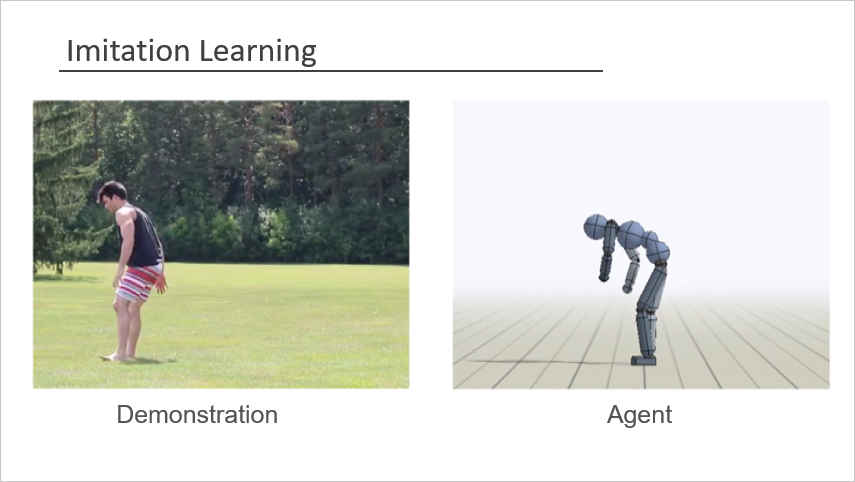

CMPT 729: Reinforcement Learning


|
Reinforcement learning is the branch of machine learning that studies learning to act. Agents observe, predict, and act to change their environment. Reinforcement learning has notable success in learning to play games and control robots. In this course, we will cover fundamental concepts and algorithms, and introduce techniques that underlie many of the successes from reinforcement learning.
Instructor: Jason Peng (Office Hour: Fri 12:30-1:30pm TASC 9213)
TA: Zhen Li (Office Hour: Thu 3-4pm TBD)
Lectures:
Wed 11:30am-12:20pm (AQ5037)
Fri 10:30am-12:20pm (AQ5037)
Grading
3 programming assignments (30%)
- A1 (10%) - Due Sep 29
- A2 (10%) - Due Oct 13
- A3 (10%) - Due Nov 10
Paper presentation (20%)
Course project (50%)
- Info
- Proposal (10%) - Due Oct 20
- Presentation (20%)
- Report (20%) - Due Dec 1
Late days: You have 3 late days that you can use for any assignment. You can distribute the late days however you like, but they can only be applied to programming assignments. Once you run out of late days, any late assignments will no longer be accepted.
Syllabus
Sep 11: Introduction
 |
Sep 6: MDP
 |
Sep 11: Policy Evaluation
 |
Sep 13: Policy Evaluation
|
 |
Sep 18: Behavioral Cloning
|
Sep 20: Policy Search
 |
Sep 25: Policy Gradient
 |
Sep 27: Policy Gradient
|
Oct 2: Q-Learning
 |
Oct 4: Q-Learning, Actor-Critic Algorithms
|
 |
Oct 9: Actor-Critic Algorithms
|
Oct 11: Model-Based RL
 |
Oct 16: Model-Based RL
|
Oct 18: On-Policy vs Off-Policy Algorithms, Advance Policy Gradient
|
 |
Oct 23: Advance Policy Gradient
 |
Oct 25: Advance Q-Learning
 |
Oct 30: Exploration
 |
Nov 1: Exploration, Paper Presentations
|
 |
Nov 6: Domain Transfer
 |
Nov 8: Domain Transfer, Paper Presentations
|
|
Nov 13: Paper Presentations
|
Nov 15: Imitation Learning
 |
Nov 20: Imitation Learning
|
Nov 22: Project Presentations
|
Nov 27: Project Presentations
|
Nov 29: Project Presentations
|